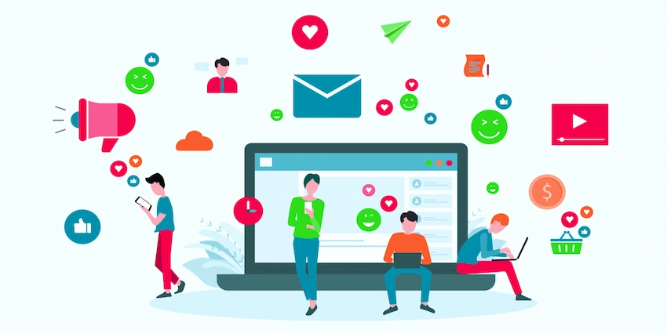

Advantagess and Disadvantages of Social Media
Social Media is a channel that is among the most popular forms of communication today. Research estimates that there are close to 3.96 billion social media users worldwide! This is a significant 4.8% increase in social media users in 2021. The power of social media experiences has been wonderful across a wide range of communities and industries. However, understanding the nuances of being an active social media participant is essential. Social media has been touted as a double-edged sword for several reasons! Keep reading to learn more about the advantages and disadvantages of social media!
1- Advantages Of Social Media
Social media offers numerous advantages, enhancing global connectivity and communication. It fosters instant information sharing, making it a valuable source for news and updates. Additionally, it empowers businesses with effective marketing tools and customer engagement. Furthermore, it promotes creativity, networking, and educational opportunities, facilitating personal and professional growth.
1.1- Enhanced Communication and Connectivity
Enhanced communication and connectivity are key advantages of social media. It bridges geographical gaps, allowing individuals to connect with friends, family, and colleagues worldwide. Real-time messaging and video calls foster meaningful interactions, while social networking platforms facilitate the exchange of ideas, information, and experiences, enriching personal and professional relationships.
1.2- Increased Access to Information and News
Social media provides increased access to information and news, enabling users to stay informed about global events and trending topics. Through platforms like Twitter and Facebook, news spreads rapidly, offering diverse perspectives. This accessibility empowers individuals to make informed decisions, participate in discussions, and engage with current affairs more than ever before.
1.3- Effective Marketing and Business Promotion
Social media offers a powerful platform for effective marketing and business promotion. It allows companies to reach a vast and targeted audience, build brand awareness, and engage customers directly. Through strategic campaigns, businesses can harness the potential of platforms like Facebook, Instagram, and LinkedIn to drive sales, gather feedback, and establish a strong online presence, ultimately boosting their bottom line.
1.4- Community Building and Networking
Social media facilitates community building and networking by connecting people who share common interests, goals, or experiences. Platforms like LinkedIn, Facebook Groups, and Reddit enable users to join or create communities, fostering discussions and collaborations. These digital networks provide opportunities for personal growth, knowledge sharing, and professional development, enhancing social connections in the digital age.
1.5- Educational Opportunities and Skill Development
Social media platforms offer valuable educational opportunities and skill development resources. Users can access a wide range of educational content, including online courses, webinars, and tutorials. This accessibility promotes lifelong learning and skill enhancement, making it a convenient and cost-effective way to acquire new knowledge and stay competitive in various fields.
- Global Connectivity
- Information Access
- Business Promotion
- Make life easy
- Global Connectivity red
- Information Access
- Business Promotion
- Make life easy
2- Disadvantages of Social Media
The disadvantages of social media include privacy breaches, as personal information is vulnerable to exploitation. Cyberbullying and online harassment are pervasive issues that can harm mental health. Excessive use often leads to addiction and time wastage. The spread of misinformation and fake news can have dire consequences, and it can contribute to social polarization. Overall, these drawbacks highlight the need for responsible and mindful social media usage.
2.1- Privacy Invasion and Data Security
Privacy invasion and data security concerns are significant disadvantages of social media. Users often share personal information unwittingly, making them susceptible to data breaches and identity theft. Additionally, the collection and misuse of user data by social media platforms and third parties raise ethical and security issues, eroding trust in online spaces.
2.2- Cyberbullying and Online Harassment
Cyberbullying and online harassment are rampant on social media, causing emotional distress and harm. Anonymous or malicious users target individuals with hurtful messages, threats, or derogatory comments, amplifying the need for stricter regulations and effective prevention measures on these platforms.
2.3- Addiction and Time Wasting
Social media addiction can lead to excessive time-wasting. Users often find themselves scrolling mindlessly, neglecting responsibilities, work, and personal relationships. This dependency on constant online engagement can have adverse effects on productivity and overall well-being.
2.4- Fake News and Misinformation
Fake news and misinformation spread rapidly on social media, influencing public opinion and causing confusion. Manipulative content can amplify divisive narratives, erode trust in credible sources, and even impact political decisions, emphasizing the need for improved fact-checking and media literacy in the digital age.
2.5- Negative Impact on Mental Health
The negative impact of social media on mental health is a growing concern. It can lead to anxiety, depression, and loneliness due to factors like social comparison, cyberbullying, and excessive screen time. Balancing online and offline life is crucial for mental well-being in the digital age.
- Privacy Risks
- Cyberbullying
- Time Wasting
- Misinformation
3- Impact on Personal Relationships
Social media's impact on personal relationships is complex. While it enables long-distance connections and communication, it can also strain relationships through misunderstandings, jealousy, and over-reliance on digital interactions. Maintaining a healthy balance between online and offline relationships is essential for fostering strong personal connections.
Social media: Connects globally, shares instantly, but also risks privacy and misinformation. Author
3.1- Communication Patterns and Relationship Dynamics
Social media significantly influences communication patterns and relationship dynamics. It can enhance long-distance relationships but also lead to misunderstandings and miscommunications. The constant connectivity can sometimes blur boundaries and affect the quality of in-person interactions, necessitating mindful use for healthier relationships.
3.2- Trust and Privacy Concerns
Trust and privacy concerns are prevalent in social media interactions. Users often grapple with issues of data security and trustworthiness of online connections. Privacy breaches, data leaks, and scams can erode trust, emphasizing the need for vigilance and strong privacy settings.
3.3- Jealousy and Insecurity in Online Interactions
Online interactions on social media can trigger jealousy and insecurity. Comparing one's life to the curated content of others can lead to feelings of inadequacy. Additionally, ambiguous online behavior can breed suspicion and undermine trust in personal relationships.
3.4- Jealousy and Insecurity in Online Interactions
Jealousy and insecurity often arise in online interactions due to the constant exposure to others' curated, seemingly perfect lives on social media. This comparison can lead to feelings of inadequacy and negatively impact self-esteem and relationships.
3.5- Quality Time vs. Screen Time in Relationships
Balancing quality time with screen time in relationships is a modern challenge. Excessive use of social media and devices can reduce face-to-face interaction, affecting the depth and intimacy of connections. Striking a healthy balance is crucial to nurture strong and fulfilling relationships.
4- Social Media and Mental Health
The relationship between social media and mental health is complex. While it offers social connections and support, excessive use can contribute to negative outcomes. Cyberbullying, social comparison, and the constant exposure to idealized lives can lead to anxiety, depression, and feelings of isolation. However, it also provides a platform for mental health awareness, support communities, and positive self-expression. Achieving a healthy balance in social media usage is essential for safeguarding mental well-being in the digital age.
5- Conclusion
- Global Connectivity
- Information Access
- Business Promotion
- Make life easy
- Privacy Risks
- Cyberbullying
- Time Wasting
- Misinformation